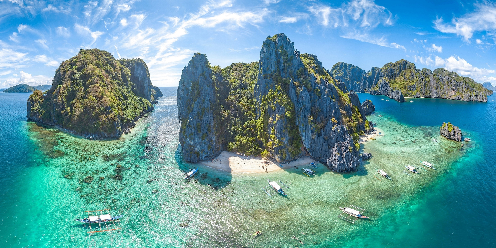
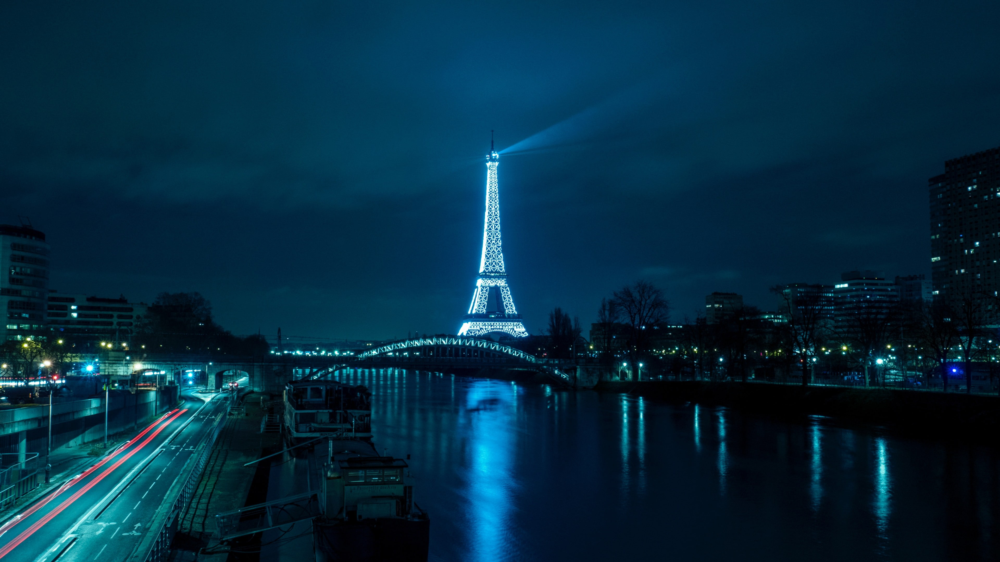

Indonesia
Indonesia (pengucapan bahasa Indonesia: [in.ˈdo.nɛ.sja]), dengan nama resmi Republik Indonesia (RI), atau lengkapnya Negara Kesatuan Republik Indonesia (NKRI), adalah sebuah negara kepulauan di Asia Tenggara yang dilintasi garis khatulistiwa dan berada di antara daratan benua Asia dan Oseania, sehingga Indonesia dikenal sebagai negara lintas benua, serta antara Samudra Pasifik dan Samudra Hindia.
see more >>
Thailand
Thailand, secara resmi Kerajaan Thailand (bahasa Thai: ราชอาณาจักรไทย, Pengucapan Thai: [raːt̚˥˩.t͡ɕʰa˦˥.ʔaː˧.naː˧.t͡ɕak̚˨˩.tʰaj˧]) yang dibaca Rātcha-āṇāchạk Thai, Rāja-ādnyācạkra Thai; atau (Prathēt Thai, Pradēsa Thai), Muang Thai, atau Mueang Thai (dibaca: "meng-thai", sama dengan versi Inggrisnya, berarti "Negeri Thai"), adalah sebuah negara di Asia Tenggara yang berbatasan dengan Laos dan Kamboja di timur, Malaysia dan Teluk Siam di selatan, dan Myanmar dan Laut Andaman di barat. Kerajaan Thai dahulu dikenal sebagai Siam sampai tanggal 11 Mei 1949. Kata "Thai" (ไทย) berarti "kebebasan" dalam bahasa Thai, tetapi juga dapat merujuk kepada suku Thai, sehingga menyebabkan nama Siam masih digunakan di kalangan warga negara Thai terutama kaum minoritas Tionghoa dan Amerika.
Next page >>
Singapura
Singapura (nama resmi: Republik Singapura) adalah sebuah negara pulau di lepas ujung selatan Semenanjung Malaya, 137 kilometer (85 mi) di utara khatulistiwa di Asia Tenggara. Negara ini terpisah dari Malaysia oleh Selat Johor di utara, dan dari Kepulauan Riau, Indonesia oleh Selat Singapura di selatan.
See more >>
philippines

Filipina adalah negara paling maju di Benua Asia setelah Perang Dunia II, namun sejak saat itu telah tertinggal di belakang negara-negara lain akibat pertumbuhan ekonomi yang lemah, penyitaan kekayaan yang dilakukan pemerintah, korupsi yang luas, dan pengaruh-pengaruh neo-kolonial. Meskipun begitu, saat ini Filipina mengalami pertumbuhan ekonomi yang moderat, yang banyak disumbangkan dari pengiriman uang oleh pekerja-pekerja Filipina di luar negeri, dan sektor teknologi informasi yang sedang tumbuh pesat. Filipina sering kali dianggap sebagai satu-satunya negara di Benua Asia di mana pengaruh budaya Barat terasa sangat kuat.
See more >>
greenland
Greenland adalah pulau terbesar di dunia (Australia dan Antarktika, sama-sama lebih besar daripada Greenland, umumnya dianggap sebagai benua).[12] Tiga per empat Greenland ditutupi oleh satu-satunya lempeng es abadi selain Antarktika. Dengan jumlah penduduk 56.480 jiwa (2013),[5] Greenland adalah wilayah berpenduduk terjarang di dunia.[13] Kurang lebih sepertiga penduduknya tinggal di Nuuk, ibu kota sekaligus kota terbesar. Kapal feri Arctic Umiaq Line menghubungkan berbagai kota dan permukiman dan menjadi transportasi utama di Greenland barat.
Funfact greenland di situ tidak terjadi malam
See more >>
Jepang
Jepang (Jepang: 日本国, Tentang suara ini Nihonkoku) adalah sebuah negara kepulauan di Asia Timur. Letaknya di ujung barat Samudra Pasifik, di sebelah timur Laut Jepang, dan bersebelahan dengan Tiongkok, Korea Selatan, dan Rusia. Pulau-pulau paling utara berada di Laut Okhotsk, dan wilayah paling selatan berupa kelompok pulau-pulau kecil di Laut Tiongkok Timur, tepatnya di sebelah selatan Okinawa yang bersebrangan dengan Taiwan.
See more >>
Prancis

Prancis (bahasa Prancis: France, [fʁɑ̃s]), secara resmi disebut sebagai Republik Prancis (bahasa Prancis: République française, [ʁepyblik fʁɑ̃sɛz]), adalah sebuah negara yang teritori metropolitannya terletak di Eropa Barat dan juga memiliki berbagai pulau dan teritori seberang laut yang terletak di benua lain.[4] Negara ini berbatasan dengan Belgia, Luksemburg, Jerman, Swiss, Italia, Monako, Andorra, dan Spanyol.
See more >>